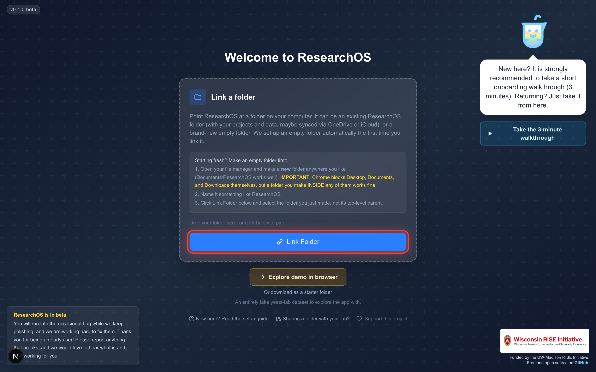

Pick the standard for every how-to screenshot. Today the capture script draws only a red outline around the target element. You asked for a mouse pointer and a click-circle so it reads as "click here." Below are the candidate styles, plus a recolor question (the current red is aggressive and off the BeakerBot palette).
Same target button, four annotation treatments. The cursor is a clean pointer set just below-right of the click point. The pulse is concentric rings centered on it.
What ships today. No pointer, no click indicator, just an outline. Reads as "look here," not "click here."
Same idea, recolored to BeakerBot sky blue. On-brand and calmer, but still no pointer or click cue.
A pointer landing on the target with a click pulse. No element outline, the cursor carries the meaning. Cleanest "click here."
Belt and suspenders. The outline frames the target and the cursor shows the action. Most emphatic, slightly busier.
The cursor and click-circle placed over the actual folder-connect shot, so you can judge it in context. (This image still carries the old red ring baked in, the new standard would replace it.)

click: { text or selector } option that places the pointer and pulse at the target center, alongside the existing ring.